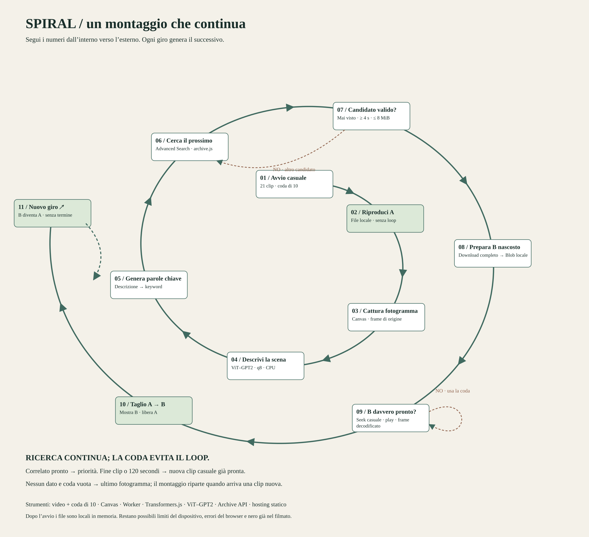

Spiral / processo logico
Una spirale di associazioni, con ricerca e riserva casuale nuova che lavorano in parallelo.


Avvio casuale
Pacchetto statico leggero
Mescola le clip mai viste. Parte la prima pronta; dieci riserve si caricano con massimo due download paralleli.
Riproduci A
MP4 precaricato · nessun loop
Alla fine entra una nuova clip pronta. Se la coda è vuota resta l’ultimo fotogramma.
Cattura fotogramma
Canvas · proporzioni originali
Il fotogramma resta associato al titolo di origine anche se nel frattempo entra una clip casuale.
Descrivi il fotogramma
ViT–GPT2 q8 · Worker · CPU
Il modello genera una descrizione inglese libera, senza classi fisse. I pixel rimangono nel browser.
Estrai keyword
Parser · nomi composti
Rimuove parole generiche e preserva espressioni come fire hydrant. Nessuna confidenza percentuale inventata.
Cerca il prossimo
Archive · catalogo pubblico
Poche query, pagine successive e verifica letterale. Priorità a titolo, poi descrizione e soggetti.
Candidato valido?
Mai visto · MP4 leggero
Scarta ID e hash già incontrati, file inaccessibili, video troppo brevi e candidati sopra 80 MiB.
Prepara B nascosto
Endpoint CORS → player nativo
Il player nativo precarica e decodifica il prossimo video. La ricerca continua anche mentre le riserve casuali entrano in scena.
B davvero pronto?
Buffer sufficiente · frame decodificato
Un candidato non ancora riproducibile non può diventare visibile. In caso di errore si prova un altro file.
Taglio A → B
Correlato prioritario · libera A
Se B è pronto vince sulla riserva. Fine video o limite 120 secondi scelgono una riserva pronta quando B manca.
Nuovo giro
Ricerca + due riserve nuove in parallelo
Dopo un correlato si analizza il nuovo video. Dopo una riserva prosegue la stessa ricerca. Nessun ritorno a file già visti.
Dove passano i dati
Hosting statico → clip iniziali. Browser → Internet Archive: query, metadati e video. Hugging Face → browser: pesi del modello. Canvas → Worker: pixel, mai inviati a un servizio AI. LocalStorage: ID e hash dei file incontrati.
Limiti
Il modello può sbagliare e una corrispondenza nei metadati non garantisce che il nuovo video mostri lo stesso oggetto. Le transizioni casuali non vengono dichiarate come collegamenti riusciti. Il campione iniziale è finito; Internet è necessario per estendere la deriva.